Publication-quality synteny plots, in pure ggplot2. Chromosomes or genes · linear or circular · one line of code · 32 palettes by name.
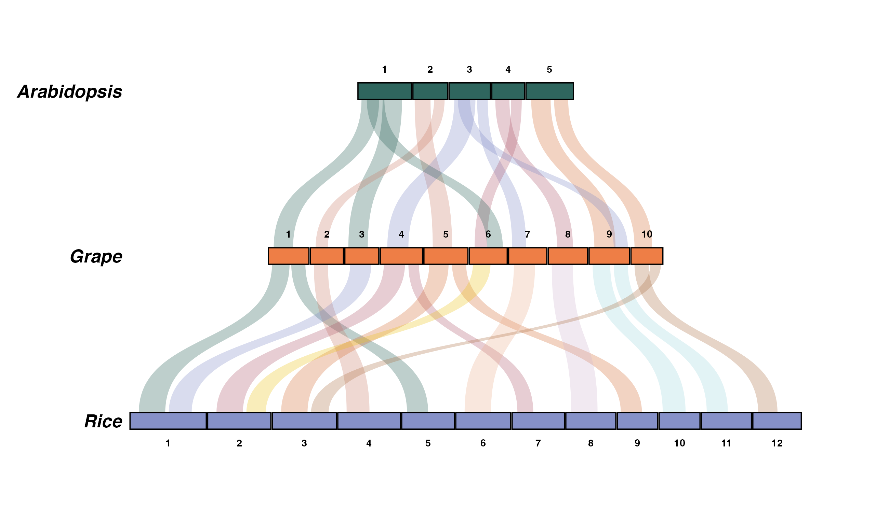
|
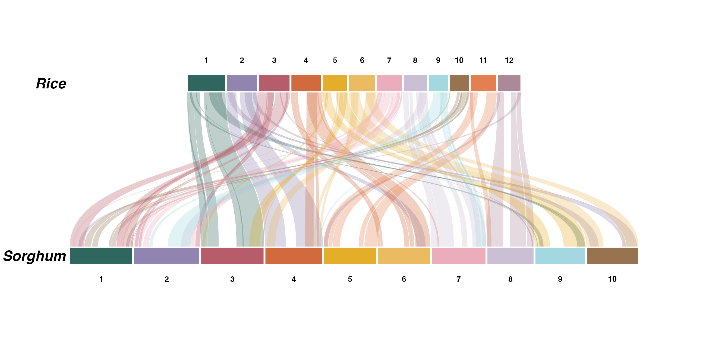 Macro-synteny chromosome tiers + block ribbons |
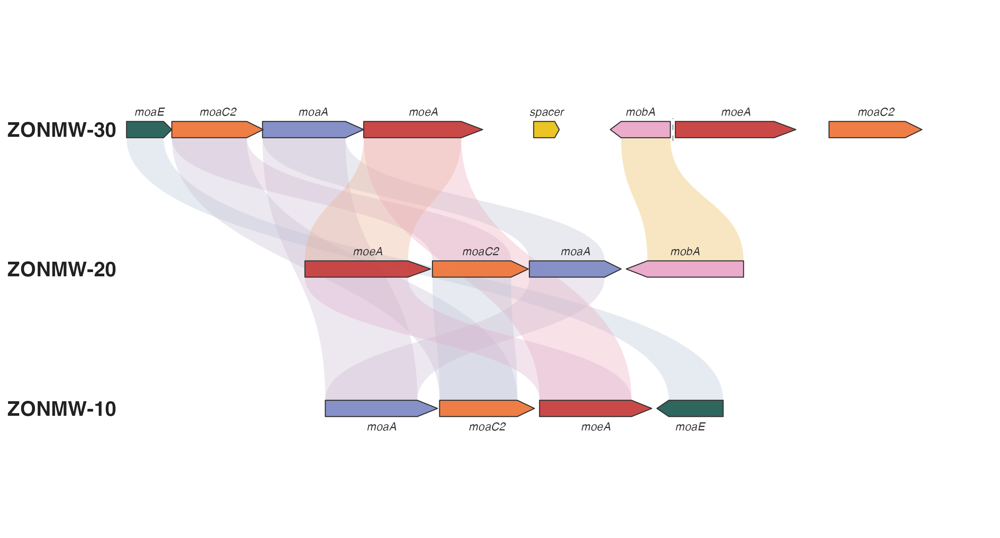 Micro-synteny gene arrows + homology ribbons |
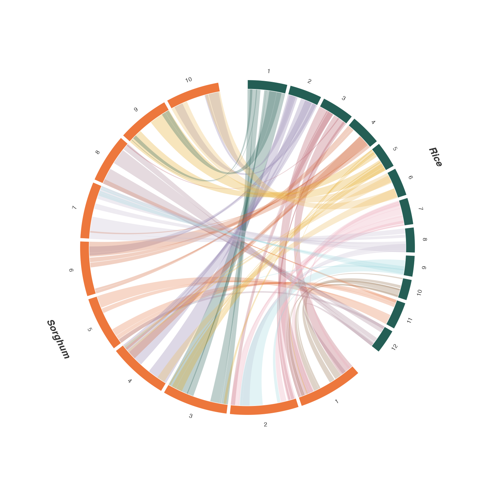 Circular chromosome arcs + chords |
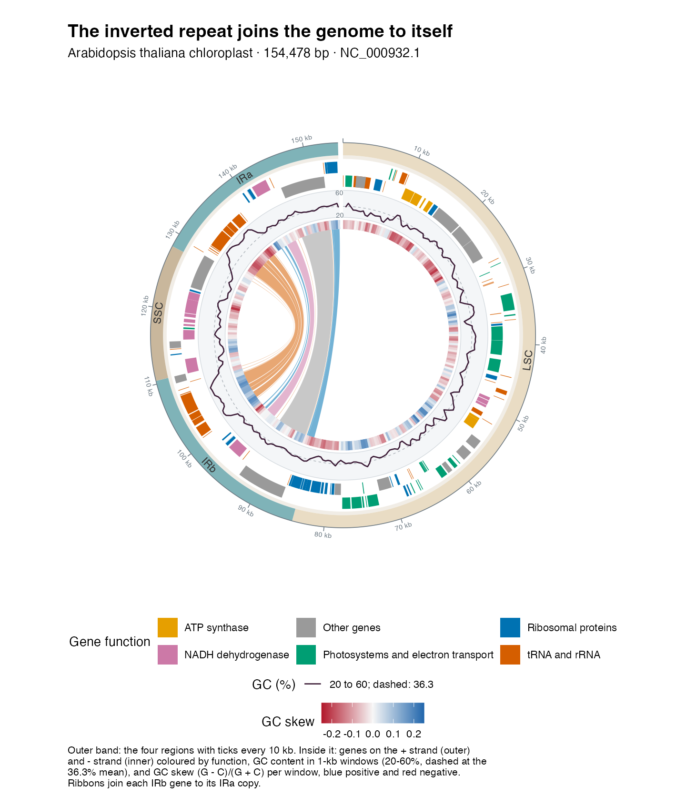 Annotation tracks GC, genes, axes — stacked with +
|
📖 Website & full documentation: https://loukesio.github.io/ggsynteny/ · 🧪 Try it in the browser, no install: ggsynteny Studio
ggsynteny draws comparative-genomics figures with ordinary ggplot2 objects, so everything you already know (+ labs(), + theme(), ggsave()) just works. It reads MCScanX, GENESPACE and plain TSV results, ships a real rice–sorghum dataset, renders hover-and-tooltip versions via ggiraph, and every colour argument accepts the 32 palettes of the ltc package by name — palette = "casa_natal" just works.
Version 0.5.0 adds circular views and ggsynteny Studio, a local Shiny app for uploading results, previewing data, and exporting figures and tables. The previous 0.3.0 source is preserved.
Contents
- Installation
- Your first plot — three lines, one figure
- Pick your view — which function for which figure
- Bring your own data — MCScanX, GENESPACE, TSV, or Studio
- The four plots — arguments, defaults, worked examples
- Add to any plot — annotation tracks, interactivity, palettes
- ggsynteny Studio — the Shiny app, with reference comparison
- Data input formats · Saving your plot · API reference · Citation
Installation
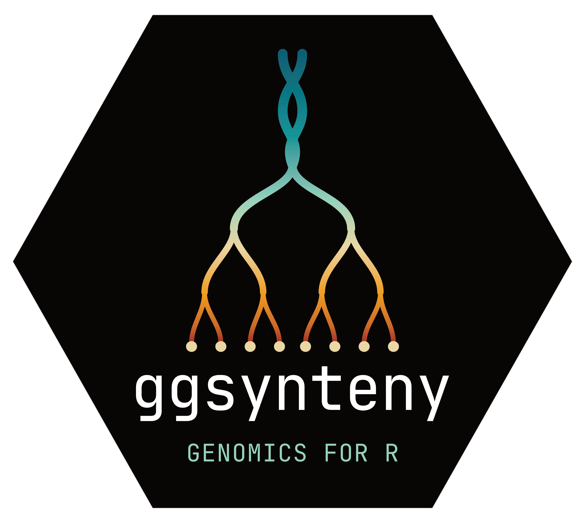
install.packages("remotes") # only needed once
remotes::install_github("loukesio/ggsynteny", upgrade = "never")
library(ggsynteny)The released 0.5.0 has the four plots and Studio. The development version on GitHub adds annotation tracks and the genome ring shown above. Restart R after installation if ggsynteny was already loaded.
Your first plot
Three plant genomes, one bundled dataset, one ltc palette driving the whole figure. Nothing to download:
library(ggsynteny)
syn <- example_synteny_data() # Arabidopsis, Grape, Rice
plot_synteny(syn,
species_order = c("Arabidopsis", "Grape", "Rice"),
palette = "casa_natal")That is the figure at the top of this page. Chromosomes are coloured per species, ribbons by source chromosome. Swap palette for any of the 32 built-in names, or add chr_radius = 1.5 for rounded, karyotype-style chromosomes.
Pick your view
Four plotting functions, two questions: chromosomes or genes? and linear or circular? Every one of them takes palette = "…" and returns a ggplot object.
| Linear | Circular | |
|---|---|---|
Chromosomes (macro-synteny)chromosomes + blocks tables
|
plot_synteny() |
plot_circular_synteny() |
Genes (micro-synteny)features + links tables
|
plot_microsynteny() |
plot_circular_microsynteny() |
Then layer on what you need:
-
Annotation tracks —
+ syn_track_heatmap(),+ syn_track_line(),+ syn_track_feature(),+ syn_axis()→ Annotation tracks -
Interactivity —
interactive = TRUE, thensyn_girafe(p)→syn_girafe() -
Reference rings — one reference, many genomes → Reference comparison, in Studio or
plot_reference_comparison()
The same real rice–sorghum MCScanX data, drawn with plot_synteny() (left) and plot_circular_synteny() (right).
Bring your own data
Already have results? Each parser returns the list that plot_synteny() and plot_circular_synteny() expect:
syn <- read_mcscanx("out.collinearity", "out.gff") # MCScanX
syn <- read_genespace("synHits.tsv") # GENESPACE
syn <- read_synteny_tsv("chromosomes.tsv", "blocks.tsv") # two plain tables
plot_synteny(syn, species_order = c("Rice", "Sorghum"), palette = "casa_natal")Gene-level plots take two plain data frames — features (one row per gene) and links (one row per homologous pair). Column names and bundled example files for every format are in Data input formats.
Prefer not to write code? Open ggsynteny Studio, upload the same files, and download the figure plus an R script that reproduces it. Details in ggsynteny_app().
Each function below follows the same pattern: what it is for, the arguments that matter with their defaults, and worked examples. Chromosome-level functions take a list with chromosomes and blocks tables; gene-level functions take features and links tables.
### plot_synteny() — chromosome-level, linear
Stacks species as tiers of chromosomes and connects their syntenic blocks with curved ribbons.
| Argument | Default | What it does |
|---|---|---|
syn_data |
— | List with chromosomes and blocks data frames |
species_order |
— | Display order, top to bottom |
palette |
NULL |
One palette for the whole plot: an ltc name, "Okabe-Ito", or a colour vector |
chr_fill |
"uniform" |
Chromosome colouring: "uniform", "per_species", "per_chr", or "custom"
|
ribbon_fill |
"source_chr" |
Ribbon colouring: "source_chr", "target_chr", "species_pair", "uniform", or "custom"
|
chr_palette, ribbon_palette
|
NULL |
Override palette for one element; named vectors map keys to colours |
ribbon_alpha, curvature
|
0.30, 0.55
|
Ribbon transparency and curve strength |
chr_radius |
0 |
Corner radius in mm; 1.5 gives karyotype-style capsules (needs ggforce) |
interactive |
FALSE |
Build ggiraph layers; render with syn_girafe()
|
The house default is quiet dark chromosomes with ribbons from the alger palette, so the ribbons carry the signal. chr_fill = "per_chr" colours each chromosome; ribbon_fill = "species_pair" gives one ribbon colour per pair:
plot_synteny(syn, species_order = c("Arabidopsis", "Grape", "Rice"), chr_fill = "per_chr", palette = "minou")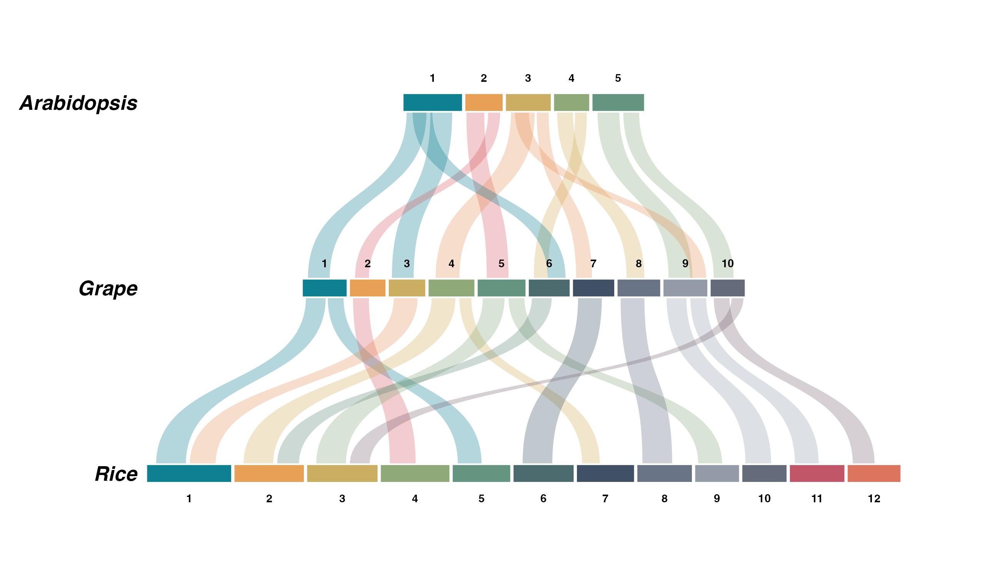
Real data. The bundled rice_sorghum dataset is genuine MCScanX output, parsed with read_mcscanx() (pipeline in data-raw/rice_sorghum.R). Two grasses, about 50 million years apart, and the textbook conserved blocks are all there: rice 1 maps almost entirely to sorghum 3, rice 11/12 to sorghum 5/8.
data(rice_sorghum)
plot_synteny(rice_sorghum, c("Rice", "Sorghum"), palette = "casa_natal",
chr_fill = "per_chr", ribbon_fill = "source_chr")More variations (species-pair ribbons, named colour maps, rounded chromosomes) are in the getting-started guide and the real-data article.
### plot_microsynteny() — gene-level, linear
Draws genes as strand-aware arrows and connects homologous genes with ribbons: the classic gene-cluster figure.
| Argument | Default | What it does |
|---|---|---|
features |
— | Data frame: bin_id, seq_id, start, end, strand, feat_id, name
|
links |
— | Data frame: feat_id_a, feat_id_b, optional identity (0–100) |
bin_order |
first appearance | Display order, top to bottom |
gene_fill |
"per_name" |
Gene colouring: "per_name", "per_feat", or "uniform"
|
ribbon_fill |
"identity" |
Ribbon colouring: "identity" (a colour ramp), "per_name", or "uniform"
|
ribbon_anchor |
"body" |
"body" keeps arrowheads clear; "full" spans the whole gene |
gene_radius |
0 |
Corner radius in mm (needs ggforce) |
label_genes |
TRUE |
Italic gene-name labels |
interactive |
FALSE |
Build ggiraph layers; render with syn_girafe()
|
micro <- example_microsynteny_data() # a moa/moe gene cluster, three strains
plot_microsynteny(micro$features, micro$links,
bin_order = c("ZONMW-30", "ZONMW-20", "ZONMW-10"), palette = "casa_natal")With ribbon_fill = "identity" the ribbon colour encodes percent identity on a light-to-dark ramp; pass an ordered palette (heatmap0 to heatmap3) as ribbon_palette to restyle it. ribbon_anchor decides where ribbons end: "body" (default) keeps every arrowhead readable under dense links; "full" spans tip included, the convention of clinker and gggenomes, and reads as “this entire gene is part of the link”.
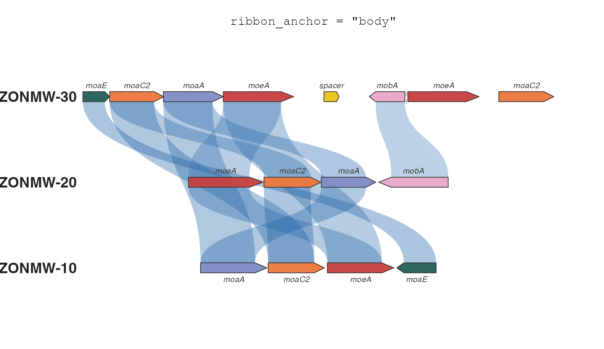
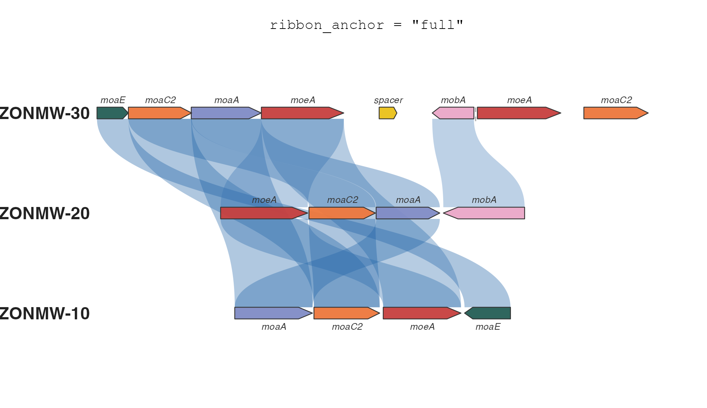
### plot_circular_synteny() — chromosome-level, ring
Arranges chromosomes as proportional arcs around a circle and connects syntenic blocks with ribbons inside. Same input tables as plot_synteny(); all relationships among the selected species are drawn, including non-adjacent ones.
| Argument | Default | What it does |
|---|---|---|
syn_data, species_order
|
— | As in plot_synteny(); the order runs around the circle |
chr_fill, ribbon_fill, palettes |
as linear | Same choices as plot_synteny(); ribbon_fill also accepts any blocks column name |
chr_order |
NULL |
Chromosome order within a species: factor levels, "input", a vector, or a per-species list |
gap, group_gap
|
1, 10
|
Gaps between chromosomes and between species, in degrees |
start_angle, clockwise
|
90, TRUE
|
Start at the top, coordinates increasing clockwise |
track_width |
0.055 |
Chromosome band thickness as a fraction of the radius |
show_orientation |
FALSE |
Connect endpoints by the block’s plus/minus orientation |
plot_circular_synteny(rice_sorghum, c("Rice", "Sorghum"), palette = "casa_natal", chr_fill = "per_species")Arc lengths share one genomic scale and ribbons keep their block coordinates. A twist alone does not identify an inversion around a circle; use show_orientation with the orientation metadata. A ring can also hold a single circular molecule with annotation rings around it: see the genome ring below.
### plot_circular_microsynteny() — gene-level, ring
Draws gene regions from several genomes as curved strand-aware arrows with homology ribbons inside. Same input tables as plot_microsynteny().
| Argument | Default | What it does |
|---|---|---|
features, links, bin_order
|
— | As in plot_microsynteny(); the order runs around the circle |
gene_fill, ribbon_fill, ribbon_anchor
|
as linear | Same choices as plot_microsynteny()
|
gap, group_gap
|
2, 10
|
Gaps between contigs and between bins, in degrees |
track_width, arrowhead_frac
|
0.065, 0.18
|
Arrow thickness and arrowhead length |
label_genes |
TRUE |
Italic gene-name labels outside the arrows |
plot_circular_microsynteny(micro$features, micro$links, palette = "casa_natal", ribbon_fill = "per_name")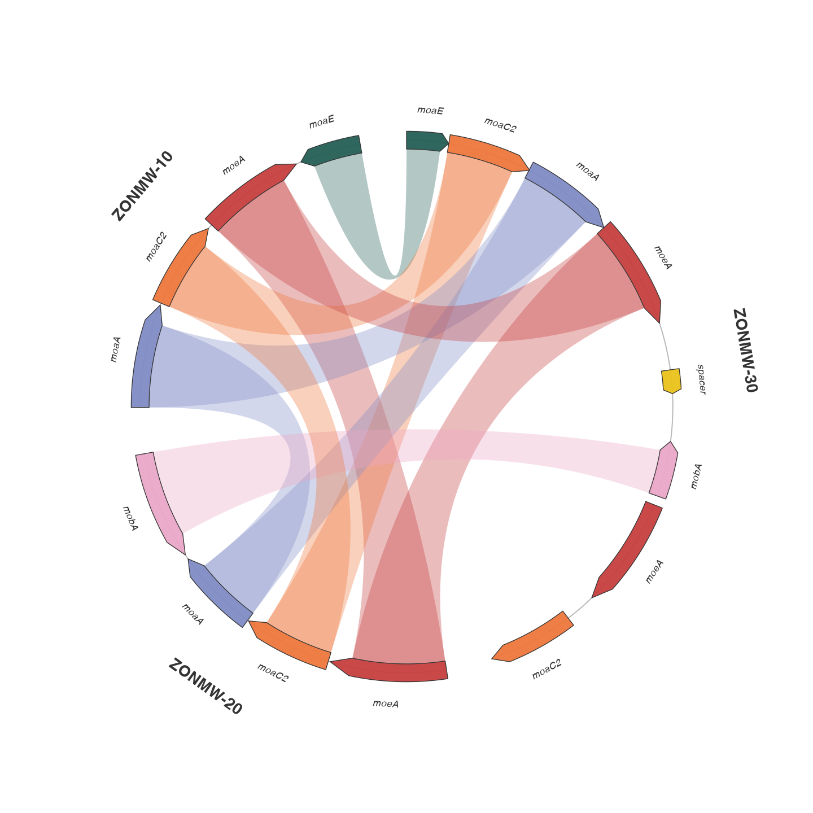
Real data. Three bacteria, 21 genes across four contigs, nine supplied homology links, from the bundled TSVs:
features <- read.delim(system.file("extdata", "circular_bacterial_features.tsv", package = "ggsynteny"))
links <- read.delim(system.file("extdata", "circular_bacterial_links.tsv", package = "ggsynteny"))
plot_circular_microsynteny(features, links, bin_order = c("ZONMW-30", "ZONMW-20", "HI1"),
palette = "casa_natal", ribbon_fill = "per_name",
ribbon_alpha = 0.36, group_gap = 15, gap = 5)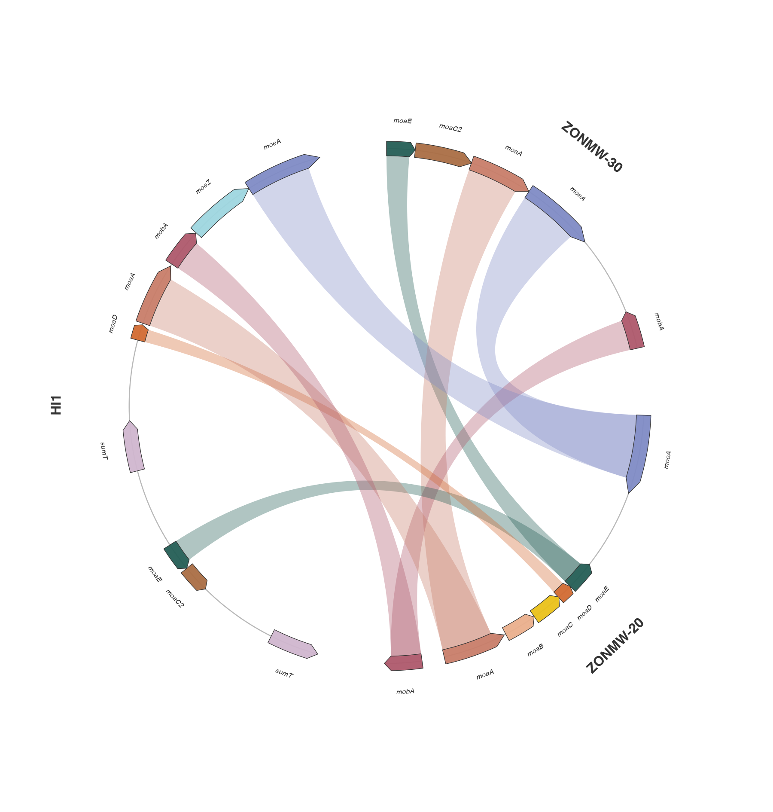
No links or identity scores are inferred; the figure shows the supplied relationships only. The circular guide covers coordinates, orientation and export.
### Annotation tracks — syn_track_*()
Not a fifth plot type, an add-on. A track is a table of intervals plus a geom saying how to draw what each interval carries. Add one with + to any of the four plots; the genome ring at the top of this page is plot_circular_synteny() plus four tracks and an axis. Tracks are in the development version on GitHub, not in the published 0.5.0 release. Tracks stack below each genome in linear plots, and outward from the chromosome band in rings (or inward with position = "inside", where the ribbons shrink to make room). One wrapper per geom lists only the options it uses:
| Wrapper | Draws | Reads | Key options |
|---|---|---|---|
syn_track_feature() |
boxes coloured by a category: genes, regions, repeats |
start, end, the fill column; optional label, strand
|
fill, palette, strand = "split"/"arrow", label
|
syn_track_heatmap() |
one colour tile per interval |
start, end, numeric value
|
limits, palette
|
syn_track_line() |
a line through interval midpoints | same |
limits, reference, colour
|
syn_track_bar() |
a bar from baseline over each interval |
same |
limits, baseline, reference
|
syn_axis() adds position ticks, gc_content() computes GC per gene or window from DNA, and out_of_bounds = "clip" keeps windows that run past a sequence end. When the plot shows one species or one sequence, the species/chr columns can be left out of the track tables.
example_dir <- system.file("extdata", "gc-tracks", package = "ggsynteny") # bundled, simulated DNA
read_example <- function(name) read.delim(file.path(example_dir, paste0(name, ".tsv")))
features <- read_example("features"); links <- read_example("links"); dna <- read_example("sequences")
gene_gc <- gc_content(dna, intervals = features) # one GC value per gene
window_gc <- gc_content(dna, window = 300, step = 100) # GC in sliding windows
gene_gc$gc_class <- ifelse(is.na(gene_gc$value), "No called bases",
ifelse(gene_gc$value >= 50, "GC-rich gene", "AT-rich gene"))
plot_microsynteny(features, links, gene_fill = "uniform", label_genes = FALSE) +
syn_track_feature(gene_gc, fill = "gc_class", strand = "arrow", name = "Gene class") +
syn_axis(by = 1000, unit = "kb") +
syn_track_line(window_gc, name = "Window GC (%)", reference = 50)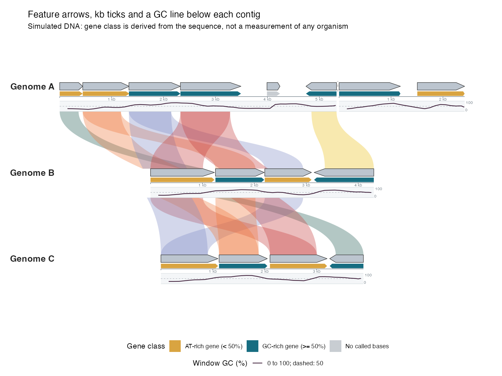
Together they draw a complete genome map. The data are the published Arabidopsis thaliana chloroplast annotation (RefSeq NC_000932.1), bundled with the package: one circular molecule as one sector, four regions, genes by strand and function, GC content and GC skew per window, and the 17 genes of the inverted repeat joined to their copies.
dir <- system.file("extdata", "chloroplast", package = "ggsynteny")
regions <- read.csv(file.path(dir, "regions.csv")); genes <- read.csv(file.path(dir, "genes.csv"))
windows <- read.csv(file.path(dir, "gc_windows.csv")); pairs <- read.csv(file.path(dir, "ir_pairs.csv"))
syn <- list(chromosomes = data.frame(species = "Arabidopsis thaliana", chr = "plastid", size = 154478),
blocks = data.frame(species1 = "Arabidopsis thaliana", chr1 = "plastid", start1 = pairs$b_start,
end1 = pairs$b_end, species2 = "Arabidopsis thaliana", chr2 = "plastid",
start2 = pairs$a_start, end2 = pairs$a_end, class = pairs$class))
gc <- data.frame(start = windows$start, end = windows$start + 999, value = 100 * windows$gc)
skew <- data.frame(start = windows$start, end = windows$start + 999, value = windows$skew)
plot_circular_synteny(syn, ribbon_fill = "class", ribbon_legend = FALSE, label_size = 0, species_label_size = 0) +
syn_track_feature(regions, fill = "region", label = "region", height = 0.07, gap = 0, show.legend = FALSE) +
syn_axis(by = 10000, unit = "kb", gap = 0) +
syn_track_feature(genes, fill = "class", strand = "split", position = "inside", height = 0.14, out_of_bounds = "clip") +
syn_track_line(gc, name = "GC (%)", limits = c(20, 60), reference = 36.3, position = "inside", height = 0.15, out_of_bounds = "clip") +
syn_track_heatmap(skew, name = "GC skew", limits = c(-0.25, 0.25), position = "inside", height = 0.05, out_of_bounds = "clip")Reproduce the ring · Track guide · Data provenance
### Interactive plots — syn_girafe()
Build any plot with interactive = TRUE and render it with syn_girafe() (via ggiraph). Hovering a ribbon fades the others and shows the block coordinates, or the gene pair and its identity in gene-level plots. Tracks stay static. Try it in the interactive article.
p <- plot_synteny(rice_sorghum, c("Rice", "Sorghum"), palette = "casa_natal", chr_fill = "per_chr",
interactive = TRUE)
syn_girafe(p) ### Palettes — syn_palettes()
Every palette argument accepts the 32 palettes of the ltc package by name (vendored, so ltc need not be installed), "Okabe-Ito", any colour vector, and grDevices::hcl.colors() names. Names ignore case, spaces, underscores and dashes. syn_palettes() returns them all; the heatmap0 to heatmap3 palettes are ordered ramps for ribbon_fill = "identity" and heatmap tracks.
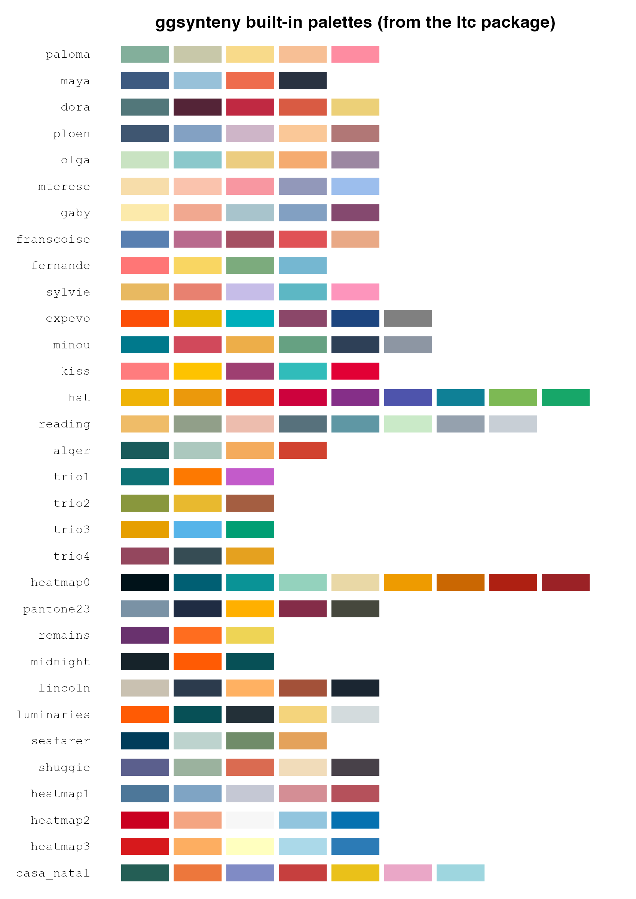
## ggsynteny Studio — ggsynteny_app()
Open ggsynteny Studio in your browser, or run it locally:
install.packages("shiny") # optional; needed only for the app
ggsynteny_app()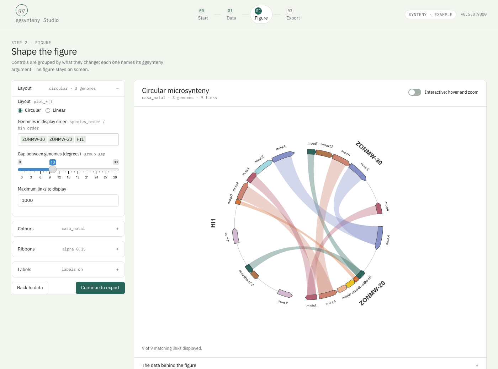
Select the software or table format, upload its files, and see the data and plot preview. Switch between the four plots, choose a palette, reorder or subset genomes, adjust ribbons, turn on the interactive switch for tooltips and zoom, and download the figure (PDF or PNG), the displayed tables, pair counts, or an R script that recreates the figure. The Annotation tracks tab stacks up to three uploaded interval tables and a coordinate axis on that figure, each drawn as feature boxes, a heatmap, a line or bars with the same options as the syn_track_*() wrappers, or starts from the chloroplast genome ring as a worked example.
| Results from | Upload | Views |
|---|---|---|
| Native chromosome tables | Chromosome sizes and syntenic blocks, TSV or CSV | Linear and circular chromosome synteny |
| MCScanX |
.collinearity and its gene-position GFF |
Linear and circular chromosome synteny |
| GENESPACE |
synHits TSV |
Linear and circular chromosome synteny |
| Gene / link tables | Gene features and homology links, TSV or CSV | Linear and circular microsynteny |
| Interval tables (Annotation tracks tab) |
start, end, plus a value or a category column |
Tracks and an axis on any of the above |
Every format includes example data (the MCScanX and GENESPACE previews are explicitly simulated). Uploaded tables are validated; no identity scores or missing links are inferred, and the app reads existing results rather than running MCScanX, GENESPACE or an aligner. To host your own copy, see the Posit Connect Cloud guide.
Studio’s Reference comparison tab draws a different kind of figure: one reference sequence in the centre and each comparison genome as an outer ring in the reference’s coordinates, showing variant calls (insertions, deletions, duplications, inversions, SNPs) and alignment identity per window. The same view is available in R as plot_reference_comparison(), with save_reference_comparison() for PDF and PNG exports in the bundled fonts. palette colours the variant marks and identity_palette the identity shading. The bundled example, five genomes with identity for every 30-kb window, is invented teaching data.
dir <- system.file("extdata", "reference_comparison", package = "ggsynteny")
variants <- read.delim(file.path(dir, "variants_five_genomes.tsv"))
identity <- read.delim(file.path(dir, "identity_five_genomes.tsv"))
p <- plot_reference_comparison(variants, genome_length = 4800000, reference = "Example reference",
sample_order = paste0("Genome_", LETTERS[1:5]), palette = "casa_natal",
identity_windows = identity, identity_palette = c("#E8D5A8", "#6FA8C9", "#1B3A5C"),
title = "Five invented genomes against one reference")
save_reference_comparison(p, "reference-comparison.pdf") # bundled IBM Plex fonts; needs showtext + sysfonts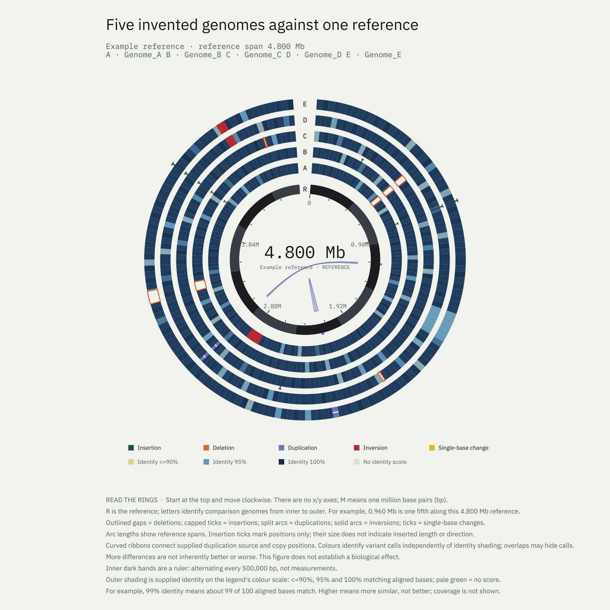
Read clockwise from the top. Inner bands are a coordinate ruler; marks show the event types in the legend; ring shading is alignment identity per window, from sand (90% or below) to navy (100%), computed from an alignment and not from the number of variants. See ?plot_reference_comparison for the input tables and how to read each mark.
Each format ships with a small example under system.file("extdata", ..., package = "ggsynteny").
Native TSV, two files in any consistent unit:
syn <- read_synteny_tsv(system.file("extdata", "chromosomes.tsv", package = "ggsynteny"),
system.file("extdata", "synteny_blocks.tsv", package = "ggsynteny"))chromosomes.tsv synteny_blocks.tsv
species chr size species1 chr1 start1 end1 species2 chr2 start2 end2
Human 1 249 Human 1 10 25 Mouse 1 80 95
Mouse 1 195 Human 2 5 40 Mouse 2 60 100MCScanX: read_mcscanx(collinearity_file, gff_file) keeps plus/minus in blocks$orientation; show_inversions = TRUE draws inverted blocks as twisted ribbons.
GENESPACE: read_genespace(synhits_file).
Gene tables for the gene-level plots: features with bin_id, seq_id, start, end, strand, feat_id, name; links with feat_id_a, feat_id_b and optional identity.
Saving your plot
width/height decide how big and sharp the image is; dpi decides how big the letters are relative to the plot.
API reference
| Function | Purpose |
|---|---|
plot_synteny(), plot_circular_synteny()
|
Chromosome-level synteny, linear tiers or ring |
plot_microsynteny(), plot_circular_microsynteny()
|
Gene-level synteny, linear tiers or ring |
syn_track() and syn_track_feature(), syn_track_heatmap(), syn_track_line(), syn_track_bar()
|
Annotation tracks added with +
|
syn_axis() |
Coordinate ticks and labels along every sequence |
gc_content() |
GC per gene or window from DNA strings |
scale_fill_syn_heatmap(), scale_fill_syn_feature()
|
Recolour one track |
syn_layout(), syn_project()
|
Sector geometry and genomic-to-plot projection for custom layers |
syn_girafe() |
Render an interactive = TRUE plot as a hoverable widget |
syn_palettes() |
The 32 built-in colour palettes |
ggsynteny_app() |
Studio: upload results, preview all four plots, export |
plot_reference_comparison(), save_reference_comparison()
|
Reference-centred variant and identity rings |
read_synteny_tsv(), read_mcscanx(), read_genespace()
|
Parsers |
rice_sorghum, example_synteny_data(), example_microsynteny_data()
|
Bundled data |
Citation
citation("ggsynteny")Contributions
ggsynteny is developed and maintained by Loukas Theodosiou (loukesio@gmail.com). Issues and pull requests are welcome at https://github.com/loukesio/ggsynteny/issues. It pairs with its sibling packages ltc (colour palettes) and ggvmap (Voronoi treemaps).
License
MIT © 2026 Loukas Theodosiou — see LICENSE.md.